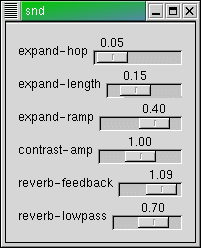

This file documents and comments upon the various *.scm files included with Snd. To use any of these files, (load <file>); for example (load "bell.scm"). To start Snd with the file already loaded, snd bell.scm.
fm-bell startime dur frequency amplitude amp-env index-env index
The FM bell was developed by Michael McNabb in Mus10 in the late '70s. It is intended for low bell sounds (say middle C or so). The lines
(mod1 (make-oscil :frequency (* frequency 2))) (mod2 (make-oscil :frequency (* frequency 1.41))) (mod3 (make-oscil :frequency (* frequency 2.82))) (mod4 (make-oscil :frequency (* frequency 2.4))) (car1 (make-oscil :frequency frequency)) (car2 (make-oscil :frequency frequency)) (car3 (make-oscil :frequency (* frequency 2.4)))
set up three FM pairs, car1+mod1 handling the basic harmonic spectra, car2+mod2 creating inharmonic spectra (using the square root of 2 more or less at random), and car3+mod3 putting a sort of formant at the minor third (2.4 = a ratio of 12/5 = octave+6/5 = minor tenth).
(define fbell '(0 1 2 1.1000 25 .7500 75 .5000 100 .2000 )) (define abell '(0 0 .1000 1 10 .6000 25 .3000 50 .1500 90 .1000 100 0 )) (fm-bell 0.0 1.0 220.0 .5 abell fbell 1.0)
bird start dur frequency freqskew amplitude freq-envelope amp-envelope bigbird start dur frequency freqskew amplitude freq-envelope amp-envelope partials one-bird beg maxdur func birdname make-birds &optional (output-file "test.snd")
bird.scm is a translation of Sambox/CLM bird songs. The two instruments set
up a simple sine wave (bird) and simple waveshaping synthesis (bigbird). Use a
low-pass filter for distance effects (a bird song sounds really silly
reverberated). All the real information is in the amplitude and frequency
envelopes. These were transcribed from sonograms found in some bird guides and articles from
the Cornell Ornithology Lab. The variable with-editable-mixes controls
whether each bird is tagged so that you can move it around later. The function
one-bird mixes in one complete birdsong, using the bird's name for the
edit history list. Many of these birds were used in "Colony". To hear all the
birds, call (make-birds). This writes the sequence out as "test.snd"; give the
desired file name as the (optional) argument to make-birds: (make-birds "birds.snd").
Waveshaping is described in Le Brun, "Digital Waveshaping Synthesis", JAES 1979 April, vol 27, no 4, p250.
(define (one-bird beg maxdur func birdname)
;; it would be better if this could get the needed mix length automatically
;; saving the individual squeaks in one vector saves us zillions of temp files (and is faster)
(set! out-data (make-vct (round (* (srate) maxdur))))
(func)
(as-one-edit
(lambda ()
(mix-vct out-data (round (* beg (srate))) out-file 0 with-editable-mixes))
birdname))
The one-bird function collects all the individual tweets of a given bird song
into one vct object, then mixes that into the output sound. The beg and maxdur
arguments set the begin time and maximum duration in seconds of the mix; the duration is
used to allocate the global vct object (out-data. The func argument is
a Scheme function of no arguments (known in Scheme as a "thunk"). It is called
via (func); the assumption is that func will actually provide
a complete bird song. For example:
(define (bobwhite beg)
(let ((bobup1 '(.00 .00 .40 1.00 1.00 1.0))
(bobup2 '(.00 .00 .65 .50 1.00 1.0)))
(one-bird beg 2.0
(lambda ()
(bigbird .4 .2 1800 200 .1 bobup1 main-amp '(1 1 2 .02))
(bigbird 1 .20 1800 1200 .2 bobup2 main-amp '(1 1 2 .02)))
(report-in-minibuffer "bobwhite"))))
defines a Bobwhite call (a kind of mid-western quail -- I grew up in Oklahoma and heard these calls every day). The func in this case is:
(lambda ()
(bigbird .4 .2 1800 200 .1 bobup1 main-amp '(1 1 2 .02))
(bigbird 1 .20 1800 1200 .2 bobup2 main-amp '(1 1 2 .02)))
which calls bigbird twice (the "bob" and the "white"). It also reports the name "bobwhite" in the minibuffer (this is mostly to let the caller know that something is happening -- since we aren't calling update-graph, there's no visual indication that a bird has been mixed in). one-bird uses as-one-edit mostly to package up the birdsong with any possible file extension (if beg is beyond the current end-of-file) which would otherwise appear as a separate edit in the edit history list. In bigbird the lines
...
(coeffs (partials->polynomial (normalize-partials partials)))
...
(polynomial coeffs
(oscil os (env gls-env))))))
setup and run the waveshaping synthesis (in this case it's just a fast additive synthesis). partials->polynomial calculates the Chebychev polynomial coefficients given the desired spectrum; the spectrum then results from driving that polynomial with an oscillator. Besides the bird guides, there are now numerous recordings of birds that could easily be turned into sonograms and transcribed as envelopes. In fact, in Snd this could be automated...
In CLM, the bird is:
(definstrument bird (startime dur frequency freq-skew amplitude freq-envelope amp-envelope
&optional (lpfilt 1.0) (degree 0) (reverb-amount 0))
(multiple-value-bind (beg end) (times->samples startime dur)
(let* ((amp-env (make-env amp-envelope amplitude dur))
(gls-env (make-env freq-envelope (hz->radians freq-skew) dur))
(loc (make-locsig :degree degree :distance 1.0 :reverb reverb-amount))
(fil (make-one-pole lpfilt (- 1.0 lpfilt)))
(s (make-oscil :frequency frequency)))
(run
(loop for i from beg to end do
(locsig loc i (one-pole fil (* (env amp-env) (oscil s (env gls-env))))))))))
The bird.scm version could easily include the one-pole filter and so on.
effects.scm implements a simple "Effects" menu, mimicking other sound editors. I think this is a mistake, but new Snd users expect a "real" editor to provide a list of sound effects somewhere. The effects implemented currently are:
reverse normalize (normalization) gain (gain-amount) invert chordalize (chordalize-amount, chordalize-base) flange (increase speed and amount to get phasing, flange-speed, flange-amount, flange-time) compand reverberate (reverb-amount) intensify (contrast-amount) echo (echo-length, echo-amount) trim front and trim back (to/from marks) crop (first and last marks) squelch (squelch-amount, omit-silence) selection->new cut selection->new add silence (at cursor) (silence-amount) append selection (and append sound) remove DC expsrc (independent pitch/time scaling) (time-scale and pitch-scale) notch filter (notch-freq and notch-bw)
Most of these are either simple calls on Snd functions ("invert" is (scale-by -1)),
or use functions in examp.scm. The actual operations follow the sync chain of the
currently active channel. Many are dependent on variables that could, I suppose, be
brought out in some dialog. "reverberate", for example, depends on the variable
reverb-amount to determine how much reverberation you get. To change such
a variable (set! reverb-amount .1).
One possibly interesting part of effects.scm is the implementation of the Effects menu. If you change one of the variables, you'll notice that the menu updates its notion of that variable as well. This is handled through update-callback argument to add-to-main-menu function. Each effect is added (when effects.scm is loaded) to the effects-list. Then each time you click the Effects menu, causing its options to be dispayed, the update-callback function itself calls each effect's update function to get its current option label. That is,
(define effects-list '())
(define effects-menu
(add-to-main-menu "Effects"
(lambda ()
(define (update-label effects)
(if (not (null? effects))
(begin
((car effects))
(update-label (cdr effects)))))
(update-label effects-list))))
defines the update-callback to be a "thunk" (the outer lambda) that itself
defines a local function (update-label) that runs through the effects-list
calling each one via ((car effects)). Each effect that wants
to recalculate its option label then
adds its update function to the effects-list when it is loaded:
(set! effects-list (cons (lambda () (let ((new-label (format #f "gain (~1,2F)" gain-amount))) (change-menu-label effects-menu gain-label new-label) (set! gain-label new-label))) effects-list))
The sound effect itself is the callback function of the given option:
(add-to-menu effects-menu "reverse" (lambda () (reverse-sound)))
I can't decide whether it would be useful to describe some of these effects in more detail. The code is mostly straight-forward, and it's not hard to try them out.
An envelope in Snd/CLM is simply a list of breakpoint pairs. The x axis extent is arbitrary, though it's simplest to use 0.0 to 1.0. env.scm provides several envelope functions that are often useful:
envelope-interp x env base window-envelope beg end env map-envelopes func env1 env2 multiply-envelopes env1 env2 max-envelope env integrate-envelope env max-x env
These are translated from CLM's env.lisp which has many more useful
functions; someday they also should be translated.
(envelope-interp x env base) returns value of env at x.
If base is 0, env is treated as a step function; if base is 1.0 (the
default), its breakpoints are connected by a straight line, and
any other base connects the breakpoints with a kind of exponential
curve:
:(envelope-interp .1 '(0 0 1 1)) 0.1 :(envelope-interp .1 '(0 0 1 1) 32.0) 0.0133617278184869 :(envelope-interp .1 '(0 0 1 1) .012) 0.361774730775292The corresponding function for a CLM env generator is env-interp. If you'd rather think in terms of e^-kt, set the base to (exp k).
window-envelope returns (as an envelope) the portion of its envelope argument that lies between the X axis values beg and end. This is useful when you're treating an envelope as a phrase-level control, applying successive portions of it to many underlying notes.
:(window-envelope 1.0 3.0 '(0.0 0.0 5.0 1.0)) (1.0 0.2 3.0 0.6)
map-envelopes applies its func argument to the breakpoints in the two envelope arguments, returning a new envelope. A simple application of this is multiply-envelopes which multiplies two envelopes:
:(multiply-envelopes '(0 0 1 1) '(0 0 1 1 2 0)) (0 0 0.5 0.5 1 0)
As this example shows, the new envelope goes from 0.0 to 1.0 along the X axis; the multiplied envelopes are stretched or contracted to fit 0.0 to 1.0, and wherever one has a breakpoint, the corresponding point in the other envelope is interpolated, if necessary. The code for multiply envelopes is simply:
(define multiply-envelopes
(lambda (e1 e2)
(map-envelopes * e1 e2)))
max-envelope returns the maximum Y value in env, and max-x returns the maximum X value:
:(max-envelope '(0 0 1 1 2 3 4 0)) 3.0
integrate-envelope returns the area under the envelope; this is useful when you need to know in advance the overall effect of an envelope controlling the sampling rate, for example.
:(integrate-envelope '(0 0 1 1)) 0.5 :(integrate-envelope '(0 1 1 1)) 1.0 :(integrate-envelope '(0 0 1 1 2 .5)) 1.25
More of env.lisp will be translated eventually.

start-enveloping stop-enveloping channel-envelope snd chn play-with-envs snd play-panned snd
enved.scm implements an independent envelope editor in each channel. (start-enveloping)
sets this in progress (for subsequently opened sounds), (stop-enveloping) turns it off.
Each envelope can be read or written via (channel-envelope snd chn).
There are also two examples that use these envelopes: play-with-envs and
play-panned. The former sets the channel's amplitude from its envelope
during playback (it should be obvious how to apply the envelope to any of the
control panel fields); the latter pans a mono sound into stereo following
the envelope. The lines:
(define channel-envelope
(make-procedure-with-setter
(lambda (snd chn)
...)
(lambda (snd chn new-env)
...)))
use a feature of Guile 1.4 that provides a set! function for channel-envelope. The first lambda is called if you're asking for the current value of that channel-envelope:
(channel-envelope s c)
and the second if you're setting it to something new:
(set! (channel-envelope s c) e)
;;; documentation examples made harder to break ;;; 'info' from extsnd.html using format ;;; correlation ;;; XEmacs-like "Buffers" menu ;;; set fft-size based on current time domain window size ;;; superimpose spectra of sycn'd sounds ;;; example of c-g? ;;; play sound n times ;;; play region over and over until C-g typed ;;; play samples created on-the-fly ;;; play while looping continuously between two movable marks ;;; make a system call ;;; translate mpeg input to 16-bit linear and read into Snd ;;; make dot size dependent on number of samples being displayed ;;; auto-save ;;; move window left edge to mark upon 'm' key ;;; flash selected data red and green ;;; show bomb icon ;;; use loop info (if any) to set marks at loop points ;;; delete selected portion and smooth the splice ;;; eval over selection or between marks replacing current samples, mapped to "x" or "m" key using prompt-in-minibuffer ;;; mix with result at original peak amp ;;; mapping extensions (map arbitrary single-channel function over various channel collections) ;;; do-chans, do-all-chans, do-sound-chans ;;; every-sample? ;;; sort-samples ;;; envelope-interp, window-envelope, map-envelopes, multiply-envelopes ;;; mix mono sound into stereo sound panning according to env, also simple sound placement ;;; fft-edit -- FFT based editing ;;; comb-filter, notch-filter, formant-filter ;;; echo (delays) ;;; ring-modulation, am ;;; src-related sound effects (src, rand-interp, etc) ;;; vct func like list ;;; compand (array-interp) ;;; shift pitch keeping duration constant (src+granulate) ;;; tempo change via envelope (granulate) ;;; cross-synthesis (using a formant bank) ;;; voiced->unvoiced (formants) ;;; convolution (convolve) ;;; reverb (all-pass etc) ;;; scissor-tailed flycatcher (waveshaping) ;;; fm-violin (FM and various other generators, #&key args) ;;; digital zipper "crossfade" (file->sample) ;;; FOF voice synthesis (wave-train, #&optional args) ;;; phase vocoder ;;; mix with envelope ;;; time varying FIR filter, notch filter, frequency-response -> FIR coeffs ;;; map-sound-files, match-sound-files ;;; move sound down 8ve using fft ;;; swap selection chans ;;; sound-interp, env-sound-interp ;;; compute-uniform-circular-string (and scanned-synthesis) ;;; add date and time to title bar ;;; selection-members ;;; with-sound for Snd ;;; how to get 'display' to write to Snd's listener ;;; hold DAC open and play sounds via keyboard ;;; "frequency division" ;;; "adaptive saturation" ;;; Dolph-Chebyshev fft data window ;;; spike effect ;;; pluck instrument (physical modelling) ;;; voice instrument (formants via FM) ;;; filtered-env (low-pass and amplitude follow envelope) ;;; multi-colored rxvt printout ;;; dht -- slow Hartley transform ;;; accessors for graph-style fields ;;; Butterworth filters
fmv.scm implements the fm-violin (v.scm) as a CLM-style generator, making it possible to call the violin anywhere a generator could be called; since each call on the fm-violin function produces the next sample of the given violin, this form of the fm-violin is easy to call in "real-time" situations (see snd-gtk.scm). Any other CLM-style instrument could be rewritten in the same form.
make-fm-violin
frequency amplitude #:key (fm-index 1.0) (amp-env #f) (periodic-vibrato-rate 5.0) (random-vibrato-rate 16.0)
(periodic-vibrato-amplitude 0.0025) (random-vibrato-amplitude 0.005) (noise-amount 0.0) (noise-freq 1000.0)
(ind-noise-freq 10.0) (ind-noise-amount 0.0) (amp-noise-freq 20.0) (amp-noise-amount 0.0) (gliss-env #f)
(fm1-env #f) (fm2-env #f) (fm3-env #f) (fm1-rat 1.0) (fm2-rat 3.0) (fm3-rat 4.0) (fm1-index #f) (fm2-index #f)
(fm3-index #f) (base 1.0) #:allow-other-keys)
fm-violin gen
fm-violin-ins [same args as original violin in v.scm]
fm-violin-ins shows how this generator can be fitted into the original fm-violin code.
The make-fm-violin function uses the optional arguments support from Guile (optargs.scm, loaded
via (use-modules (ice-9 optargs))). The plethora of arguments is an historical artifact;
normally only a few of them are used at a time. There are two examples of calling this generator
in fmv.scm, the simpler one being:
(define test-v
(lambda (beg dur freq amp amp-env)
(let ((v (make-fm-violin
freq amp
:amp-env (let ((e (make-env :envelope (or amp-env '(0 0 1 1 2 0))
:scaler amp
:end dur)))
(lambda () (env e)))))
(data (samples->vct beg dur)))
(do ((i 0 (1+ i)))
((= i dur))
(vct-set! data i (+ (vct-ref data i)
(fm-violin v))))
(set-samples beg dur data))))
Here we are setting up an fm-violin generator (via make-fm-violin), then
calling it dur times, mixing its output into the current data (this could
also use mix-vct and so on). The generator is called via (fm-violin v).
As can be seen here, each envelope is treated as a function called on each sample
very much like the "as-needed" input in src or granulate; the envelopes could actually be any
arbitrary function you like (see test-v1 in fmv.scm which uses an oscillator as one of
the fm index envelopes). One complication in some "real-time" situations is that
you don't know in advance how long a note will be; in this case, the envelope
generating functions should have attack and decay ramps, triggered by note-on and
note-off; once the ramp has reached its end point, the end value should be held;
the note itself should be called until it has had time to ramp off; an exercise
for the interested reader.
start-gl stop-gl cleanup-gl
glfft.scm and glfft.c implement a way for Snd to display spectra using OpenGL. Due to
the way Mesa (the open source OpenGL) connects with the X server, I decided not to try
to imbed this in Snd itself. Snd and glfft communicate through shared files, one
being a "lock" file and the other containing the data to be displayed. Snd writes
"glfft.data", then "glfft.lock". glfft (the reader) waits until it sees glfft.lock,
then reads glfft.data and deletes both files. If Snd has data ready to go but sees
glfft.lock, it does not try to write glfft.data (it assumes glfft is reading the
previous version). The OpenGL code in glfft.c is very primitive; someday I'll
learn about OpenGL, or even better some OpenGL expert will take a look at it!
To use this code, build glfft.c, invoke glfft, go to Snd, set up a spectrogram,
and (start-gl). (stop-gl) turns it off. (cleanup-gl)
calls stop-gl and then removes the glfft communication files.
goopsnd.scm goofs around with goops, the Guile Object System. As it stands, it might provide simple examples of goops syntax, but I'm not sure it's of any value yet. There are days when it seems to me that there must be something neat we could do here. (Currently this file is broken -- something changed in goops, and my old code no longer works).
*html-reader* "netscape" html obj ? obj
index.scm provides a connection between an HTML reader (default: netscape, determined
by the value of *html-reader*) and the Snd documentation. The index itself is
built by index.cl, then accessed through the html and ? functions.
(html arg) where arg can be a string, symbol, or procedure looks for a corresponding url
in the various Snd documents,
and if one is found, calls *html-reader* with it.
(? obj) prints out any help it can find for obj, and tries to find obj in the documentation.
The function that actually passes the url to the reader is send-netscape defined in snd-gxutils.c.
Since it uses X window properties specific to netscape, it's not obvious how any other HTML
reader can work. All the following forms are acceptable:
(html "open-sound") (html 'open-sound) (html open-sound)
loop.scm implements (at least partially) some Common Lisp syntax in Scheme using Scheme's define-syntax. For example, prog1 in Scheme is:
(define-syntax prog1
(syntax-rules ()
((prog1 <form1>) <form1>)
((prog1 <form1> <form2> ...)
(let ((_result_ <form1>)) <form2> ... _result_))
))
This code says that (prog1 <form>) should be expanded as <form>,
and that anything more complicated should save the value of the first form, returning
it at the end. There's nothing special (in Scheme) about the "< >" business,
and probably a better way to specify the "_result_". The "..." is Scheme's "and so on"
marker within these syntax patterns. loop.scm has a first stab at loop, and
implementations of dotimes, progn, and prog1.
Any additions are welcome!
:(define hi (prog1 (+ 1 2) (abs -1) "hi")) #<unspecified> :hi 3 :(loop for i from 0 to 2 do (snd-print i)) 0 1 2 #f
marks.scm is a collection of mark-related functions.
mark-name->id name describe-mark id syncup ids fit-selection-between-marks m1 m2 pad-marks ids secs move-syncd-marks sync samples-to-move play-syncd-marks sync
mark-name->id is like find-mark but searches all currently accessible channels. describe-mark returns a description of the movements of mark id over the channel's edit history:
:(describe-mark 0) ((mark 0 sound 0 "oboe.snd" channel 0) 654 478)
Here I placed a mark in oboe.snd at sample 654, then deleted a few samples before it, causing it to move to sample 478. pad-marks inserts secs seconds of silence before each in a list of marks (ids). fit-selection-between-marks tries to squeeze the current selection between two marks, using the granulate generator to fix up the selection duration (this still is not perfect). syncup synchronizes a list of marks by inserting silences as needed. move-syncd-marks moves any marks sharing the sync value sync by samples-to-move samples. Similarly, play-syncd-marks starts playing from all marks sharing its sync argument.
marks.scm also has code that tries to make it simpler to sync marks together (see start-sync and stop-sync), and report-mark-names that causes any named mark to display its name in the minibuffer when the underlying sample happens to be played. There are also many mark-related functions in examp.scm and scattered around the documentation.
mix.scm provides various mix-related utilities, including support for "tracks". The latter were originally called groups in Snd, with their own elaborate dialog and what-not. That was jettisoned soon after it was written. The next thing to go were the "mix consoles" -- originally each mix incapsulated the current Mix Panel in a little (but incredibly complicated) widget set that followed the mix around in the time domain graph. This was too hard to implement in Gtk+, and too hard to use in any case. The current version has only the "tag" to drag a mix around, the Mix Panel to set mix amplitudes and so on, and a bunch of hooks. These hooks are used in mix.scm to implement one view of "tracks", which I assume are groups of related mixes (I've actually never looked at a "real" sound editor to find out what all the fuss is about).
mix-name->id name mix->vct id pan-mix file frame env
These are the mix utilities in mix.scm (unrelated to tracks). mix-name->id returns the id of a given (named) mix. mix->vct returns the current samples of mix id (taking into account its current amplitude an so on). pan-mix mixes file into the current (stereo) sound starting at frame using the envelope env to pan the mixed samples (0: all chan 0, 1: all chan 1).
make-track id mixes track id track->vct track save-track track filename track-color track set-track-color track color set-track-amp track amp incf-track-amp track amp-increment set-track-speed track speed transpose-track track semitones track-position track set-track-position track position track-end track track-length track set-track-tempo track tempo set-track-amp-env track chan env filter-track track coeffs
A track is a list of mixes, each member mix having its track set to the track id. The make-track function takes the track id and the list of member mixes, returning the list of mixes. Thereafter, the track function returns the mix list given the track id. The rest of the track functions take the track mix list as their initial argument. track->vct places all the mix samples in the track into a vct object. Similarly, save-track places the track's samples into a file.
The track-color refers to the color of the mix waveform (the thing displayed to the right of the red tag). set-track-color sets this color using Snd colors.
:(define hi (make-track 1 (list 0 1))) #<unspecified> :(track 1) (0 1) :(mix-track 0) 1 :(set-track-color (track 1) (make-color 0 0 1)) (#<color: (0.00 0.00 1.00)> #<color: (0.00 0.00 1.00)>)
The track-position is the position (begin sample) of the first mix in the track. set-track-position moves all the mixes in the track so that its first sample is position:
:(track-position (track 1)) 10748 :(mix-position 0) 10748 :(mix-position 1) 23287 :(set-track-position (track 1) 1500) (1500 14039) :(mix-position 0) 1500 :(mix-position 1) 14039
The track-amp reflects the mix amps (unless you set them individually, but I guess that quibble is true of all these settings). set-track-amp sets each mix channel's chan amplitude to amp. Similarly, incf-track-amp increments each amplitude by amp-increment. The track-speed refers to its mix's speeds: set-track-speed sets all of them to speed, and transpose-track moves them all by semitones. track-length returns the total duration (samples) of the track, track-end returns the last sample:
:(track-length (track 1)) 16346 :(- (+ (mix-position 1) (mix-length 1)) (mix-position 0)) 16346 :(track-end (track 1)) 17846 :(max (+ (mix-position 0) (mix-length 0)) (+ (mix-position 1) (mix-length 1))) 17846
set-track-tempo affects the time between the successive mix begin points (tempo > 1.0 makes the mixes happen more quickly):
:(set-track-tempo (track 1) 2.0) (1500 7770) :(mix-position 0) 1500 :(mix-position 1) 7770 :(+ 1500 (* .5 (- 14039 1500))) ; 14039 is the former mix 1 begin time (see above) 7769.5
set-track-amp-env applies an amplitude envelope over the entire track, setting each mix's amp env(s) to match the portion of that envelope that happens to fall over them (multiplying envelopes if the mix aready has one). filter-track applies a filter to each mix sound at the pre-mix point (that is, the mixed in sound is being edited, then the mix takes place); any kind of edit can follow the same sequence.
Finally, the various mix hooks can be tied into these functions so that (for example) the entire track moves when you drag one mix in it, or all the amplitudes change at once. sync-multichannel-mixes causes multichannel mixes to be syncd together automatically (this is normally what people expect).
make-moog-filter frequency Q moog-filter gen input
moog.scm is a translation of CLM's moog.lisp (written by Fernando Lopez-Lezcano -- http://www-ccrma.stanford.edu/~nando/clm/moog), itself a translation of Tim Stilson's original C code. The functions provide a kind of CLM generator view of the filter. Fernando describes it as a "Moog style four pole lowpass (24db/Oct) filter clm unit generator, variable resonance, warm, analog sound ;-)". In make-moog-filter "frequency" is the cutoff frequency in Hz (more or less) and "Q" is the resonance: 0 = no resonance, 1 causes the filter to oscillate at frequency. My translation is a bit simple-minded; with a little effort, this could run much faster.
(define (moog freq Q)
(let ((gen (make-moog-filter freq Q)))
(lambda (inval)
(moog-filter gen inval))))
(map-chan (moog 1200.0 .7))
pqw-vox beg dur freq spacing-freq amp ampfun freqfun freqscl phonemes formant-amps formant-shapes
pqwvox ("phase-quadrature waveshaping voice") was originally written by Marc LeBrun in the late 70's using waveshaping. It was changed to use FM for the Samson Box since the box had trouble performing waveshaping, then changed back to waveshaping in this version. The basic idea is that each of the three vocal formants is created by two sets of waveshapers, one centered on the even multiple of the base frequency closest to the desired formant frequency, and the other on the nearest odd multiple. As the base frequency moves (vibrato, glissando), these center frequencies are recalculated (one each sample), and the respective amplitudes set from the distance to the desired frequency. If a center frequency moves (for example, the base frequency moves down far enough that the previous upper member of the pair has to become the lower member), the upper waveshaper (which has ramped to zero amplitude), jumps down to its new center. The formant table was provided by Robert Poor. The "phase-quadrature" part of the business creates single side-band spectra. For details on waveshaping, see Le Brun, "Digital Waveshaping Synthesis", JAES 1979 April, vol 27, no 4, p250. It might be simpler to set up three formant generators and drive them with the waveshapers, but the "leap-frog" idea was a neat hack -- such things are worth keeping even when they aren't all that sensible anymore. (Also, I noticed while writing this paragraph that the single-sideband cancellation is not working as I expected -- another bug to track down...)
prc95.scm is a translation to Snd of Perry Cook's (1995) physical modelling toolkit; prc-toolkit95.lisp in CLM. One starting point for physical modelling is Smith, "Music Applications of Digital Waveguides", CCRMA, Stan-M-39, 1987. or Julius's home page (which is completely amazing): http://www-ccrma.stanford.edu/~jos (?), or any of several classic papers also by Julius Smith. Perry's own version of this code can be found in STK; there's also apparently a csound version somewhere. Perry uses slightly different versions of delay lines and so on, but much (perhaps all) of this could be done using "vanilla" CLM generators. The generators defined here are reedtable, bowtable, jettable, onezero, onepole, biquad (biquad filter), lip, dcblock, and two kinds of interpolating delay line: delaya and delayl (which I think differ in the interpolation technique -- linear and all-pass?).
make-reed #;key (offset 0.6) (slope -0.8) reedtable r sample make-bowt #:key (offset 0.0) (slope 1.0) bowtable b sample jettable sample make-onez #:key (gain 0.5) (zerocoeff 1.0) (input 0.0) onezero b sample make-onep #:key (polecoeff 0.9) (gain 1.0) (sgain 0.1) (output 0.0) onepole p sample make-biq biquad b sample make-dcb #:key (input 0.0) (output 0.0) dcblock b sample make-delaya len delaya d sample make-delayl len delayl d sample lip b mouthsample boresample
The example instruments are:
plucky beg dur freq amplitude maxa bow beg dur frq amplitude maxa brass beg dur freq amplitude maxa clarinet beg dur freq amplitude maxa flute beg dur freq amplitude maxa (define (test-prc95) (plucky 0 .3 440 .2 1.0) (bow .5 .3 220 .2 1.0) (brass 1 .3 440 .2 1.0) (clarinet 1.5 .3 440 .2 1.0) (flute 2 .3 440 .2 1.0))
This is the same as the CLM phase-vocoder generator, but implemented in Scheme. If you're interested in how the thing works, I think the Scheme version is easiest to understand; the Common Lisp version is in mus.lisp, and the C version is in clm.c.
make-pvocoder fftsize overlap interp analyze edit synthesize pvocoder gen input
The analyze, edit, and synthesize arguments to make-pvocoder are functions that are applied as needed during pvocoder processing; similarly, the input argument to pvocoder can be a function. pvoc.scm also contains a few examples of using the CLM phase-vocoder generator. For example:
(define test-pv-4
(lambda (gate)
(let ((pv (make-phase-vocoder #f
512 4 128 1.0
#f ;no change to analysis
(lambda (v)
(let ((N (mus-length v)))
(do ((i 0 (1+ i)))
((= i N))
(if (< (pv-ampinc v i) gate)
(set-pv-ampinc v i 0.0)))
#t))
#f ;no change to synthesis))
(reader (make-sample-reader 0)))
(map-chan (lambda (val)
(phase-vocoder pv (lambda (dir)
(next-sample reader)))))
(free-sample-reader reader))))
sets up a phase-vocoder generator whose edit function is squelching soft partials. In this case, the input function is reading the currently selected channel. The fastest way to try out this generator is to use it as the argument to filter-sound. I can't think of good names for the internal arrays (such as pv-ampinc above).
rgb.scm is a simple translation of the standard X11 color names into Snd color objects.
(define snow (make-color 1.00 0.98 0.98))
is taken from the line
255 250 250 snow
/usr/lib/X11/rgb.txt. The choice of a float between 0.0 and 1.0 (rather than an integer between 0 and 255) mimics PostScript; as video hardware has improved over the years, there's less and less need for these elaborate color names, and less reason to limit these numbers to bytes.
rubber-sound stretch-factor
rubber-sound tries to stretch or contract a sound (in time); it scans the sound looking for stable (periodic) sections, then either deletes periods or interpolates new ones to shorten or lengthen the sound. It still needs a lot of robustification. The algorithm is 1) remove all frequencies below 16 Hz, 2) resample the file to be ten times longer (interpolating samples), 3) make a list of upward zero crossings, 4) using autocorrelation decide where the next fundamental zero crossing probably is and see how much difference there is between the current period and the next, 5) check intermediate crossing weights and if the autocorrelation weight is not the smallest, throw away this crossing, 6) sort the remaining crossings by least weight, 7) interpolate or delete periods until the sound has been sufficiently lengthened or shortened.
make-amp-dialog make-control-dialog make-fmv-dialog make-amp-controls
These functions are examples of using Guile-Gtk in Snd. First you need to build Snd with Gtk and Guile-gtk loaded. make-amp-dialog creates a dialog with an amplitude control on playback and a play button, providing a simple example of "real-time" controls in Snd.

make-control-dialog creates a dialog that controls all the "hidden" control-panel variables.
The "expand-hop" control sets the hop size (per grain), "expand-length"
sets the grain length, "expand-ramp" sets the slope, essentially, of the grain amplitude envelope,
"contrast-amp" sets the prescaler for the contrast effect, "reverb-feedback" sets the feedback
amount in the reverberator (it sets all the comb filter scalers), and "reverb-lowpass" sets
the lowpass filter coefficient in the reverberator. (make-control-dialog)
adds the "control" option to the Options menu.
make-fmv-dialog is based on the version of the fm-violin in fmv.scm; it provides a dialog to control the violin's amplitude. Since the entire path is interpreted here (Guile does not yet have a compiler), this is asking a lot even of a fast machine. make-amp-controls provides a slider controlling each channel's amplitude; this is an extension of the built-in control panel where each control affects all channels at once.
snd-test.scm is a large test suite for Snd. The simplest use is:
snd -l snd-test
which will run all the tests, assuming you have the various sound files it is expecting to find. I assume that for most users snd-test.scm will provide more of a set of example calls than anything directly useful.
The fm violin was my favorite instrument while working in the 70's and 80's, primarily on the Samson box. It was developed in Mus10 (ca 1977) based on ideas of John Chowning; a Mus10 version was (in this code ":=" is used in place of the original SAIL left arrow character, and so on):
ARRAY GlissFunc, DecayFunc, AttackFunc, SineWave, AmpFunc(512);
SYNTH(Sinewave); 1,1 999;
SEG(AmpFunc); 0,0 1,25 1,50 0,75 0,100;
SEG(GlissFunc);0,1 1,50, 0,100;
SEG(AttackFunc);0,0 1,100;
SEG(DecayFunc);1,1 .6,5 .3,10 .15,25 .07,50 0,100;
INSTRUMENT VN1;
VARIABLE Reset1,Noise,/NewMag,OtherFreq,/Gliss,Distance,Stereo,
Freq,Amp1,Amp2,Duration,AttackTime,DecayTime,Memory1,
Index1,Index2,Index3,scFreq,DecayLength,Switch1,Switch2,
/Mod1,/Mod2,/Mod3,/Env,/Att,/Vibrato,IMult,/Snd,
/Flutter,VibRate,VibAmp,/Ramp,/Decay,VibSwitch,LogFreq,
GlissLength,Bowing,DecayCall,VibCall,GlissCall,RampCall;
Memory1:=1;
I_ONLY BEGIN
Duration:=P2;
Freq:=P3;
Amp1:=P4;
Amp2:=P5;
OtherFreq:=P6;
IF Freq>=C THEN Freq:=Freq+Freq/100;
IF Freq<C THEN Freq:=Freq-20/Freq;
Switch1:=P14;
Switch2:=1-Switch1;
IMult:=P7-(Switch2/4);
VibSwitch:=P8;
Bowing:=P9;
Distance:=P10;
Stereo:=P11;
Noise:=P12;
GlissLength:=P13;
LogFreq:=ALOG(Freq);
DecayCall:=VibCall:=RampCall:=GlissCall:=20;
IF Amp1=Amp2 THEN RampCall:=SRATE;
IF Freq=OtherFreq THEN GlissCall:=SRATE;
IF VibSwitch=0 THEN VibCall:=SRATE;
IF Switch1=1 THEN DecayCall:=SRATE;
Vibrate:=5.25+RAND*.75;
VibAmp:=.006+RAND*.001;
IF Bowing=0
THEN
IF Memory1>.08
THEN
BEGIN
DecayTime:=.7;
AttackTime:=.2;
END
ELSE
BEGIN
DecayTime:=.7;
AttackTime:=.05;
Noise:=0;
END
ELSE
IF Memory1>.05
THEN
BEGIN
DecayTime:=.05;
AttackTime:=.2;
END
ELSE
BEGIN
DecayTime:=.05;
AttackTime:=.05;
Noise:=0;
END;
Memory1:=DecayTime;
IF AttackTime+DecayTime>=Duration
THEN
BEGIN
AttackTime:=Duration*AttackTime;
DecayTime:=DecayTime*Duration;
IF AttackTime<=.05 THEN AttackTime:=Duration-DecayTime-.01;
END;
ScFreq:=Freq*MAG;
DecayLength:=1000/Freq;
IF Switch1=0 THEN Noise:=.1;
Index1:=7.5*IMult/LogFreq;
Index2:=5/SQRT(Freq);
Index3:=IMult*30*(8.5-LogFreq)/Freq;
END;
Decay:=Switch1+EXPEN[DecayCall](Switch2,MAG*20/DecayLength,DecayFunc);
ENV:=Switch2+LINEN[20](Switch1,AttackTime/20,DecayTime/20,Duration/20,AmpFunc,Reset1:=0);
Ramp:=Amp1+NOSCIL[RampCall](Amp2-Amp1,20*MAG/Duration,AttackFunc);
Gliss:=Freq+EXPEN[GlissCall](OtherFreq-Freq,20*MAG/GlissLength,GlissFunc);
FLutter:=RANDI[VibCall](1,200*Mag);
Vibrato:=NOSCIL[VibCall](ENV,Vibrate*MAG*20,SineWave);
Att:=1-EXPEN[20](1,MAG*640,AttackFunc);
NewMag:=(1+Flutter*.005)*(1+Vibrato*VibAmp)*(1+RANDI(Noise*Att,2000*Mag))*Gliss*Mag;
Mod1:=NOSCIL(Decay*ScFreq*(Att+Index1),NewMag,Sinewave);
Mod2:=NOSCIL(Decay*ScFreq*(Att+Index2),4*NewMag,Sinewave);
Mod3:=NOSCIL(Decay*ScFreq*(Att+Index3),3*NewMag,Sinewave);
Snd:=ZOSCIL(Decay*ENV*Ramp,NewMag+Mod1+Mod2+Mod3,Sinewave);
OUTA:=OUTA+Snd*0.5;
END;
This instrument required about 60 seconds of computing on a PDP-10 (a $250,000 minicomputer) for 1 second of sound (our normal sampling rate was 12800). Since the PDP was massively time-shared, 60 seconds of computing could involve many minutes of sitting around watching AI scientists play Space War. Mus10 was an extension of Music V for the PDP-10 family of computers. To give a feel for how one worked in those days, here's a brief quote from the Mus10 manual (by Tovar and Leland Smith, May 1977):
The following generates 1 second of a 440 Hz sine wave followed by 1/2 sec. of a 660Hz sine wave. The output goes to a file, MUSIC.MSB, which is written on DSKM. COMMENT Fill array with sine wave; ARRAY SINETABLE[511]; FOR I:=0 STEP 1 UNTIL 511 DO SINETABLE[I]:=SIN(2*PI/512); INSTRUMENT SINE; COMMENT Generate simple sine wave. P4 = Amplitude, P3 = frequency; OUTA:=OUTA+OSCIL(P4,P3*MAG,SINETABLE); END; COMMENT Now, generate the sound; PLAY ; SIMP 0, 1, 440, 1000; SIMP 1, 1/2, 660, 1000; FINISH;
The computation involved was considered so burdensome, that the names of the main users were posted in the AI lab halls, apparently to try to get us to go away. I was normally the primary user (in terms of computrons) for the entire lab, and I had no intention of going away. In the Samson box world, this (in its initial "chorus" version) was:
Instrument(Violin); RECORD_POINTER(seg) nullfunc; INTEGER ARRAY gens[1:4],indgens[1:6], GensA[1:4],AmpGens[1:2]; ! synthesizer addresses; REAL ARRAY ratsA[1:4],Indrats[1:6],ratsB[1:4],AmpRats[1:2]; ! envelope data; INTEGER ModGens1Sum,i,FuncOffSet,k,GenOutLoc,GenInLoc,ModGens2Sum,x1,x2; Pars(<(InsName,Beg,Dur,Freq,Amp,Function AmpFunc,Function IndFunc,IndMult, SkewMult,Nothing,PcRev,No11,No12,No13,Function SkewFunc)>); ! the parameters of this instrument; Dbugit(Pns); ! debugging aid; GenOutLoc:=CASE (Pn[1] MOD 4) OF (Outma,Outmb,Outmc,Outmd); ! OUTMA is channel 1, OUTMB channel 2, etc; if freq>srate/3 then return; ! note too high, so leave it out; x1:=3; ! modulating frequency checks; x2:=4; ! (we ant them less than srate/2); If x1*freq>srate/2 Then x1:=1; If x2*freq>srate/2 then x2:=1; amp:=Amp/2; ! two carriers, so halve the amplitude; waiter(Beg); ! wait for the beginning of the note; indRats[1]:=(x1*Freq*IndMult*((8.5-log(freq))/(3+(freq/1000)))*4/srate) MIN .999; indRats[2]:=(x2*Freq*IndMult*(1/(freq^.5))*4/srate) MIN .999; indRats[3]:=(freq*IndMult*(5/log(freq))*4/srate) MIN .999; indrats[4]:=indrats[1]; indrats[5]:=indrats[2]; indrats[6]:=indrats[3]; ! these index ratios are those described ! in the paper mentioned above; ratsA[1]:=x1; ratsA[2]:=x2; ratsA[3]:=1; ratsA[4]:=1; ratsB[1]:=x1+.002; ratsB[2]:=x2+.003; ratsB[3]:=1.002; ratsB[4]:=1; ! this is the skewing for the chorus effect; Gens[1]:=Osc(Pns,ModGens1Sum); ! now set up the oscillators; Gens[2]:=Osc(Pns,ModGens1Sum); Gens[3]:=Osc(Pns,ModGens1Sum); Gens[4]:=Osc(Pns,genInLoc,ModGens1Sum); ! carrier 1; GensA[1]:=Osc(Pns,ModGens2Sum); GensA[2]:=Osc(Pns,ModGens2Sum); GensA[3]:=Osc(Pns,ModGens2Sum); GensA[4]:=Osc(Pns,genInLoc,ModGens2Sum);! carrier 2; indgens[1]:=gens[1]; indgens[2]:=gens[2]; indgens[3]:=gens[3]; indgens[4]:=gensA[1]; indgens[5]:=gensA[2]; indgens[6]:=gensA[3]; ! set up envelope addressing; ModSig(Pns,GenOutLoc,GenInLoc,1-pcRev); ! send signal to DACs; ModSig(Pns,RevIn,GenInLoc,pcRev); ! and signal to reverberator; AmpGens[1]:=Gens[4]; AmpGens[2]:=GensA[4]; AmpRats[1]:=1; AmpRats[2]:=1; ! now add the envelopes; AddArrEnv(Pns,AmpGens,2,"A",0,Amp/2,AmpFunc,AmpRats); AddArrEnv(Pns,IndGens,6,"A",0,1,IndFunc,Indrats); AddArrEnv(Pns,Gens,4,"F",freq,Freq*skewmult,skewfunc,ratsA, 5,.011,.011,nullfunc,6,.017,.017,nullfunc,0,0); AddArrEnv(Pns,GensA,4,"F",freq,Freq*skewmult,skewfunc,ratsA, 6,.010,.010,nullfunc,5,.017,.017,nullfunc,1,0); End!Instrument(Pns); ! deallocation;
The Sambox version eventually became incredibly complicated, mainly to try to handle note list problems in the instrument. The Samson box could run about 5 or 6 of these in "real-time", similar to a modern-day 500 MHz Pentium running CLM. The parallel in the Sambox world to the SIMP example above is (this is taken from SAMBOX.BIL, November 1984):
Instrument(Simp);
Integer Gen1;
Gen1:=Osc(Pns,OutA,Zero,SineMode,0,0,Pn[3]);
AddEnv(Pns,Gen1,"A",0,Pn[4],Pf[5]);
End_Instrument(Pns);
The CLM version of this is:
(definstrument simp (start-time duration frequency amplitude
&optional (amp-env '(0 0 50 1 100 0)))
(multiple-value-bind (beg end) (times->samples start-time duration)
(let ((s (make-oscil :frequency frequency))
(amp (make-env :envelope amp-env :scaler amplitude :duration duration)))
(run
(loop for i from beg below end do
(outa i (* (env amp) (oscil s))))))))
In CLM, the fm-violin became (fm.html, 1989):
(definstrument violin (beg end frequency amplitude fm-index)
(let* ((frq-scl (in-hz frequency))
(maxdev (* frq-scl fm-index))
(index1 (* maxdev (/ 5.0 (log frequency))))
(index2 (* maxdev 3.0 (/ (- 8.5 (log frequency)) (+ 3.0 (/ frequency 1000)))))
(index3 (* maxdev (/ 4.0 (sqrt frequency))))
(carrier (make-oscil :frequency frequency))
(fmosc1 (make-oscil :frequency frequency))
(fmosc2 (make-oscil :frequency (* 3 frequency)))
(fmosc3 (make-oscil :frequency (* 4 frequency)))
(ampf (make-env :envelope '(0 0 25 1 75 1 100 0) :scaler amplitude))
(indf1 (make-env :envelope '(0 1 25 .4 75 .6 100 0) :scaler index1))
(indf2 (make-env :envelope '(0 1 25 .4 75 .6 100 0) :scaler index2))
(indf3 (make-env :envelope '(0 1 25 .4 75 .6 100 0) :scaler index3))
(pervib (make-triangle-wave :frequency 5 :amplitude (* .0025 frq-scl)))
(ranvib (make-randi :frequency 16 :amplitude (* .005 frq-scl)))
(vib 0.0))
(run
(loop for i from beg to end do
(setf vib (+ (triangle-wave pervib) (randi ranvib)))
(outa i (* (env ampf)
(oscil carrier
(+ vib
(* (env indf1) (oscil fmosc1 vib))
(* (env indf2) (oscil fmosc2 (* 3.0 vib)))
(* (env indf3) (oscil fmosc3 (* 4.0 vib))))))))))))
or in its actual (non-simplified) form):
(defun bit20 (x) ;Samson box modifier got 2's complement 20 bit interpreted as fraction
(if (>= x (expt 2 19)) ;(this needed to keep fm-violin backwards compatible with old note lists)
(float (/ (- x (expt 2 20)) (expt 2 19)))
(float (/ x (expt 2 19)))))
(defun make-frobber-function (beg end frobl)
(let ((result (list beg))
(val (bit20 (cadr frobl))))
(loop for x in frobl by #'cddr and
y in (cdr frobl) by #'cddr do
(when (and (>= x beg)
(<= x end))
(push val result)
(push x result)
(setf val (bit20 y))))
(push val result)
(push end result)
(push val result)
(nreverse result)))
(definstrument fm-violin
(startime dur frequency amplitude &key
(fm-index 1.0)
(amp-env '(0 0 25 1 75 1 100 0))
(periodic-vibrato-rate 5.0)
(random-vibrato-rate 16.0)
(periodic-vibrato-amplitude 0.0025)
(random-vibrato-amplitude 0.005)
(noise-amount 0.0) (noise-freq 1000.0)
(ind-noise-freq 10.0) (ind-noise-amount 0.0)
(amp-noise-freq 20.0) (amp-noise-amount 0.0)
(gliss-env '(0 0 100 0)) (glissando-amount 0.0)
(fm1-env '(0 1 25 .4 75 .6 100 0))
(fm2-env '(0 1 25 .4 75 .6 100 0))
(fm3-env '(0 1 25 .4 75 .6 100 0))
(fm1-rat 1.0) (fm2-rat 3.0) (fm3-rat 4.0)
(fm1-index nil) (fm2-index nil) (fm3-index nil)
(base nil) (frobber nil)
(reverb-amount 0.01)
(index-type :violin)
(degree nil) (distance 1.0) (degrees nil)
(no-waveshaping nil) (denoise nil)
(denoise-dur .1) (denoise-amp .005)
&allow-other-keys)
(if (> (abs amplitude) 1.0)
(setf amplitude (clm-cerror ".1?" .1 #'numberp "amplitude = ~A?" amplitude)))
(if (<= (abs frequency) 1.0)
(setf frequency (clm-cerror "440.0?" 440.0 #'numberp "frequency = ~A?" frequency)))
(let* ((beg (floor (* startime *srate*)))
(end (+ beg (floor (* dur *srate*))))
(frq-scl (hz->radians frequency))
(modulate (not (zerop fm-index)))
(maxdev (* frq-scl fm-index))
(vln (not (eq index-type :cello)))
(logfreq (log frequency))
(sqrtfreq (sqrt frequency))
(index1 (or fm1-index (min pi (* maxdev (/ (if vln 5.0 7.5) logfreq)))))
(index2 (or fm2-index (min pi (* maxdev 3.0 (if vln
(/ (- 8.5 logfreq) (+ 3.0 (* frequency .001)))
(/ 15.0 sqrtfreq))))))
(index3 (or fm3-index (min pi (* maxdev (/ (if vln 4.0 8.0) sqrtfreq)))))
(easy-case (and (not no-waveshaping)
(zerop noise-amount)
(eq fm1-env fm2-env)
(eq fm1-env fm3-env)
(zerop (- fm1-rat (floor fm1-rat)))
(zerop (- fm2-rat (floor fm2-rat)))
(zerop (- fm3-rat (floor fm3-rat)))
(zerop (nth-value 1 (floor fm2-rat fm1-rat)))
(zerop (nth-value 1 (floor fm3-rat fm1-rat)))))
(coeffs (and easy-case modulate
(partials->polynomial
(list fm1-rat index1
(floor fm2-rat fm1-rat) index2
(floor fm3-rat fm1-rat) index3))))
;; that is, we're doing the polynomial evaluation using fm1osc running at fm1-rat * frequency
;; so everything in the polynomial table should be in terms of harmonics of fm1-rat
(norm (or (and easy-case modulate 1.0) index1))
(carrier (make-oscil frequency))
(fmosc1 (and modulate (make-oscil (* fm1-rat frequency))))
(fmosc2 (and modulate (or easy-case (make-oscil (* fm2-rat frequency)))))
(fmosc3 (and modulate (or easy-case (make-oscil (* fm3-rat frequency)))))
(ampf (make-env (if denoise (reduce-amplitude-quantization-noise amp-env dur amplitude denoise-dur denoise-amp) amp-env)
amplitude :base base :duration dur))
(indf1 (and modulate (make-env fm1-env norm :duration dur)))
(indf2 (and modulate (or easy-case (make-env fm2-env index2 :duration dur))))
(indf3 (and modulate (or easy-case (make-env fm3-env index3 :duration dur))))
(frqf (make-env gliss-env (* glissando-amount frq-scl) :duration dur))
(pervib (make-triangle-wave periodic-vibrato-rate (* periodic-vibrato-amplitude frq-scl)))
(ranvib (make-rand-interp random-vibrato-rate (* random-vibrato-amplitude frq-scl)))
(fm-noi (if (and (/= 0.0 noise-amount)
(null frobber))
(make-rand noise-freq (* pi noise-amount))))
(ind-noi (if (and (/= 0.0 ind-noise-amount) (/= 0.0 ind-noise-freq))
(make-rand-interp ind-noise-freq ind-noise-amount)))
(amp-noi (if (and (/= 0.0 amp-noise-amount) (/= 0.0 amp-noise-freq))
(make-rand-interp amp-noise-freq amp-noise-amount)))
(frb-env (if (and (/= 0.0 noise-amount) frobber)
(make-env (make-frobber-function startime (+ startime dur) frobber) :duration dur
:base 0 :scaler (* two-pi noise-amount))))
(vib 0.0)
(modulation 0.0)
(loc (make-locsig :degree (or degree degrees (random 90.0)) :reverb reverb-amount :distance distance))
(fuzz 0.0)
(ind-fuzz 1.0)
(amp-fuzz 1.0))
(run
(loop for i from beg to end do
(if (/= 0.0 noise-amount)
(if (null frobber)
(setf fuzz (rand fm-noi))
(setf fuzz (env frb-env))))
(setf vib (+ (env frqf) (triangle-wave pervib) (rand-interp ranvib)))
(if ind-noi (setf ind-fuzz (+ 1.0 (rand-interp ind-noi))))
(if amp-noi (setf amp-fuzz (+ 1.0 (rand-interp amp-noi))))
(if modulate
(if easy-case
(setf modulation
(* (env indf1)
(polynomial coeffs (oscil fmosc1 vib)))) ;(* vib fm1-rat)??
(setf modulation
(+ (* (env indf1) (oscil fmosc1 (+ (* fm1-rat vib) fuzz)))
(* (env indf2) (oscil fmosc2 (+ (* fm2-rat vib) fuzz)))
(* (env indf3) (oscil fmosc3 (+ (* fm3-rat vib) fuzz)))))))
(locsig loc i
(* (env ampf) amp-fuzz
(oscil carrier (+ vib (* ind-fuzz modulation)))))))))
which is very similar to the Scheme version (v.scm). It's basically setting up several parallel modulators of one carrier (see fm.html for details, or (ah nostalgia...) Schottstaedt, "The Simulation of Natural Instrument Tones Using Frequency Modulation with a Complex Modulating Wave", CMJ vol 1 no 4 1977 p46-50). The modulators themselves are modulated (vibrato, noise, etc). The FM indices were chosen to try to mimic violin or cello sounds over a wide range of frequencies. There's no limit on what this instrument can do; nearly all my compositions in the 80's used it. In CLM, there's fmviolin.clm which shows some of the effects (although it's unfortunately hard to read due to the way the Sambox system worked).
with-sound is the primary sound producing macro in CLM (in a sense, it is CLM's user-interface).
(define *snd-srate* (default-output-srate)) (define *snd-file-name* "test.snd") (define *snd-channels* (default-output-chans)) (define *snd-explode* #f) ;with-mix-tags (define *snd-data-format* (default-output-format)) (define *snd-header-type* (default-output-type)) (define* (with-sound-helper thunk #:key (srate *snd-srate*) (output *snd-file-name*) (channels *snd-channels*) (explode *snd-explode*) (header-type *snd-header-type*) (data-format *snd-data-format*) (comment #f) (continue-old-file #f) (statistics #f) (scaled-to #f) (scaled-by #f)) ;;; (with-sound (:srate 44100) (fm-violin 0 1 440 .1))
make-zipper ramp-env frame-size frame-env zipper gen in1 in2
The zipper generator performs a kind of cross fade, but not one that tries to be smooth! It marches through the two sounds taking equal short portions of each, then abutting them while resampling so that as one takes less overall "frame" space, the other takes more. The frame-size argument is the initial length of each twosome in seconds, the frame-env argument determines this length as new "frames" are needed, and the ramp-env argument determines which of the files gets more space in the frame (0: all first, 1: all second). For example, the following function sets up two sounds, an upward ramp and a downward ramp, then zips them together using test-zip in zip.scm:
(define (ramp-test)
(let ((data (make-vct 10000)))
(new-sound "new-0.snd")
(do ((i 0 (1+ i))) ((= i 10000))
(vct-set! data i (* i .0001)))
(vct->samples 0 10000 data 0)
(new-sound "new-1.snd")
(do ((i 0 (1+ i))) ((= i 10000))
(vct-set! data i (- 1.0 (* i .0001))))
(vct->samples 0 10000 data 1)
(test-zip)))

Needless to say, this is not intended to be a hazy romantic gesture!